Hello there -- In this article we will talk about our final year thesis work on Building Infrastructure Classification & Detection. We are from Khulna University of Engineering & Technology (KUET). Firstly, for thesis work we proposed new dataset called building infrastructure dataset. Then we will talk about Building Infrastructure Classification methodology based on CNN. Finaly, we move on to Object Ditection to detect & identify the building by SSD MobileNet and YOLO.
View Dataset View The PaperPublication
5th International Conference on Electrical Information and Communication Technology (EICT 2021)
Building Infrastructure Classification with Hybrid Convolutional Neural Network Architecture
Abstract— Since the modernization of structural and architectural building construction, it is now a developing research field for automated building infrastructure categorization and detection for both computer and architectural researchers for the intelligence system. In this research, various types of building infrastructure are classified, such as mosques, temples, brick houses, tin shed houses, and so on. Despite the lack of a standard dataset in this research area, a new dataset called the building infrastructure image dataset is introduced. For the image classification, two types of convolutional neural networks (CNN) architecture are proposed, the first one is sequential CNN and another one is hybrid CNN. The performance of these two architectures is evaluated on the proposed dataset. Again, the proposed architecture’s performance is compared with popular transfer learning models with or without pre-trained weights. With the pre-trained weights, the transfer learning models perform better than the ones without pre-trained weights, which is experimented on in the proposed dataset. The proposed hybrid CNN model outperforms the sequential CNN model as well as popular transfer learning models such as MobileNet and DenseNet without pre-trained weights on the proposed dataset. Index Terms—Building Infrastructure, Image Classification, Sequential CNN, Hybrid CNN, Transfer Learning.
View Dataset View The PaperDataset Samples
The dataset contains 1500 images divided into six classes. Brick houses, mosques, temples, skyscrapers, tin shed houses, and mud houses are among the classes.
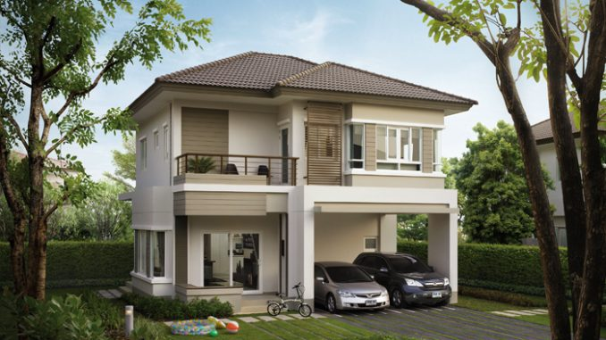
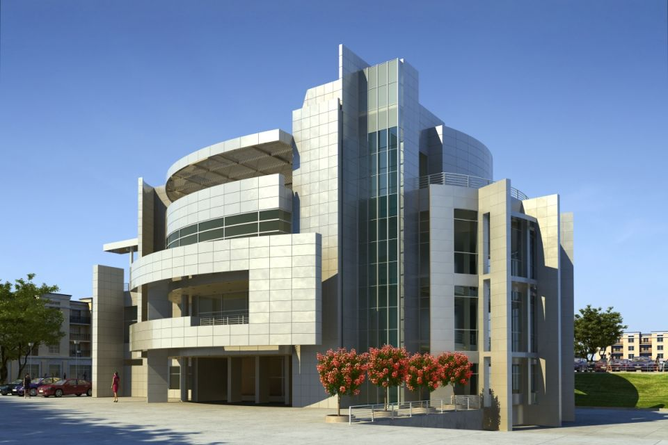
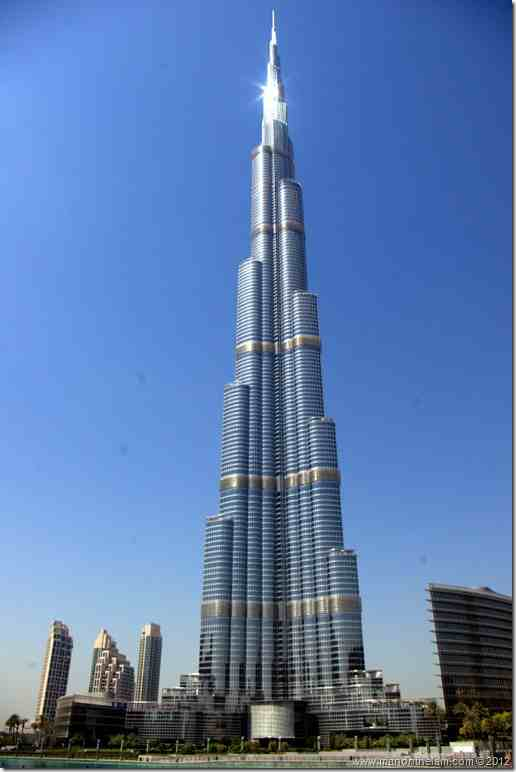
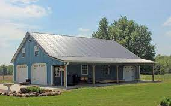
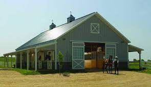
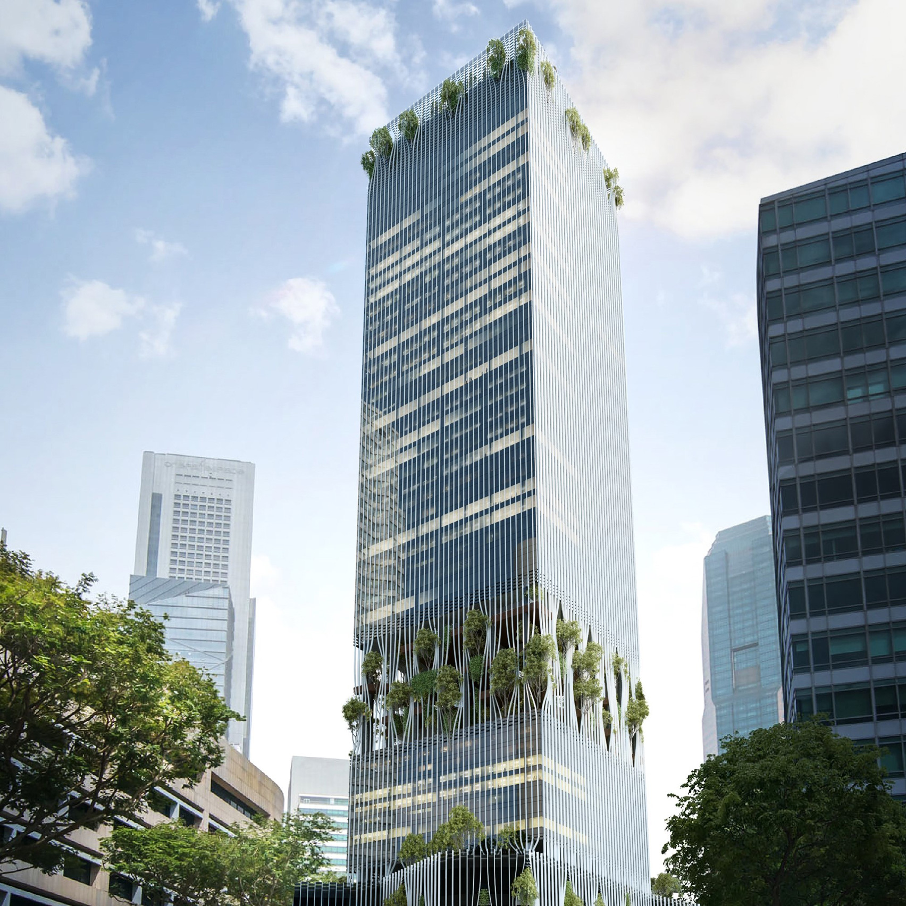
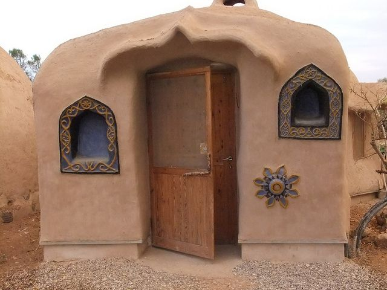
Classification
For the image classification, two types of convolutional neural networks (CNN) architecture are proposed, the first one is sequential CNN and another one is hybrid CNN.
Two types of image classification models are proposed in this paper. On the proposed dataset, hybrid CNN architecture outperforms the sequential CNN architecture experimentally. The performance of the developed models compared with the transfer learning model. There is a significant difference in performance with and without pre-trained weights is discovered. When using the pre-trained weights models, always get better results than when doing not. Without pre-trained weights, the proposed hybrid CNN architecture outperforms the MobileNet and DenseNet models. The total number of parameter sizes is lower than any other model that is a major contribution for image classification architectures. The goal of this research is also to reduce the number of parameters so that model can be used in practical applications with reduced time complexities and aid in the innovative task. The number of images and classes in the dataset building infrastructure will be increased in the future.
Qualitative Results of Proposed Model
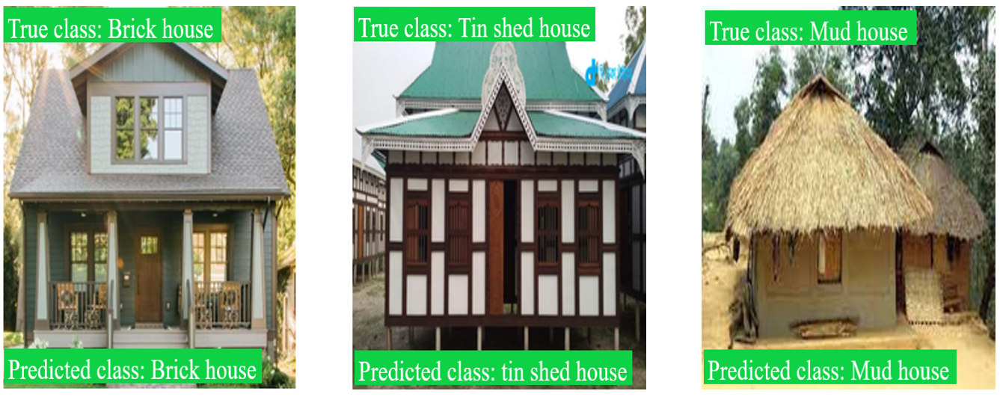
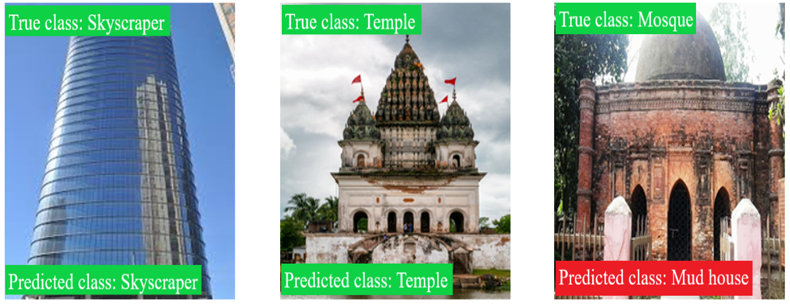
Object Detection
Object detection by SSD MobileNet and YOLO
Object detection -Annotating and labeling the image Implement object detection using MobileNet and Single Shot Detector (SSD) Draw bounding box into the image Comparison between ground truth and predicted bounding box.
Object Detect (Building)
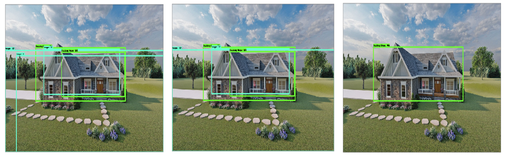
Object Detect (Mosque)
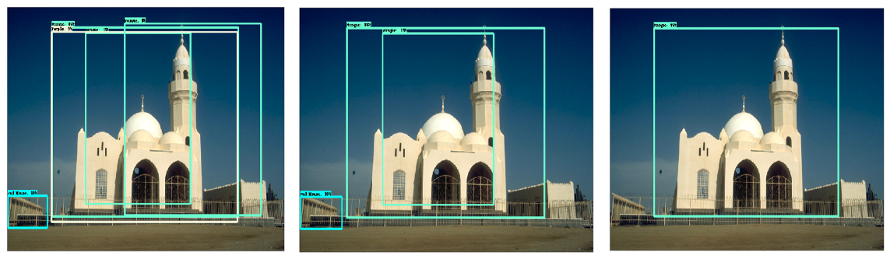
Authors
Brains behind the thesis work.